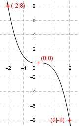

Aufgabe 35 Ergänzen Sie die Wertetabelle für den Graphen: y = -x3 x -2 0 2 y 8 0 -8  f(x) = -8 eingesetzt: -8 = -x3 |*(-1) x3 = 8 x = 83 = 2 f(0) = (0)3 = 0 f(-2) = -(-2)3 = 8
Aufgabe 35 Ergänzen Sie die Wertetabelle für den Graphen: y = -x3 x -2 0 2 y 8 0 -8
